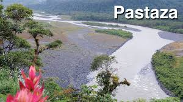

Provincia del Pastaza. Pastaza, oficialmente Provincia de Pastaza, es una de las 24 provincias que conforman la República del Ecuador, situada en la Región Amazónica del Ecuador. Recibe su nombre del río Pastaza, que la separa al sur de la Provincia de Morona Santiago. Su capital es la ciudad de Puyo.
El paisaje y la belleza natural de los encantos de Pastaza, brindan las mejores opciones a visitantes y científicos que deseen conocer y compenetrarse en la cotidianidad de comunidades indígenas que viven muy cerca de la impresionante vegetación, fauna, ríos inmensos, cascadas y demás lugares fascinantes que constituyen la muestra vital de la biodiversidad natural del oriente de Ecuador. Pastaza es la provincia más grande de Ecuador y la más rica en biodiversidad. Constituye la mejor oportunidad para que el turismo se deleite al recorrer la selva tropical visitando las comunidades indígenas Curaray y Copatasa, rodeadas de vegetación y especies animales; navegando y bañándose en los ríos Pastaza, Puyo, Curaray y otros de la región. El 95% de la flora provincial es bosque húmedo tropical, debido a la pluviosidad anual que varía entre 2.000 y 4.000 milímetros cúbicos, lo que favorece la formación de extensos y excelentes pastizales que propician el desarrollo del ganado vacuno.